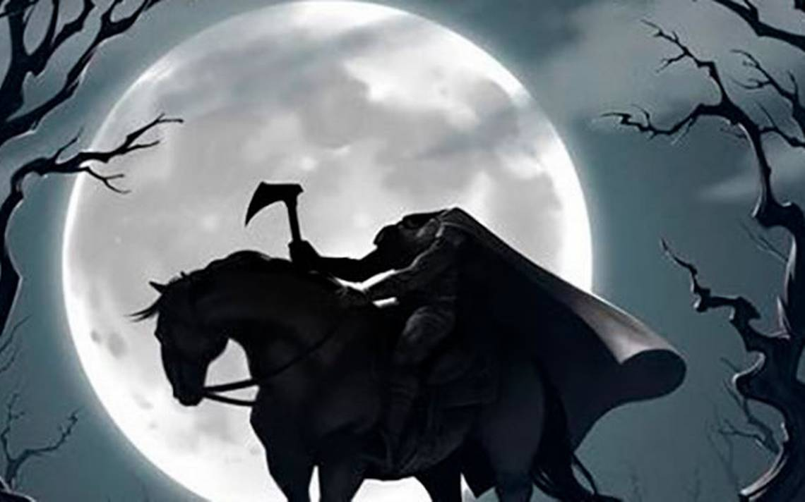
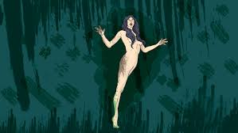
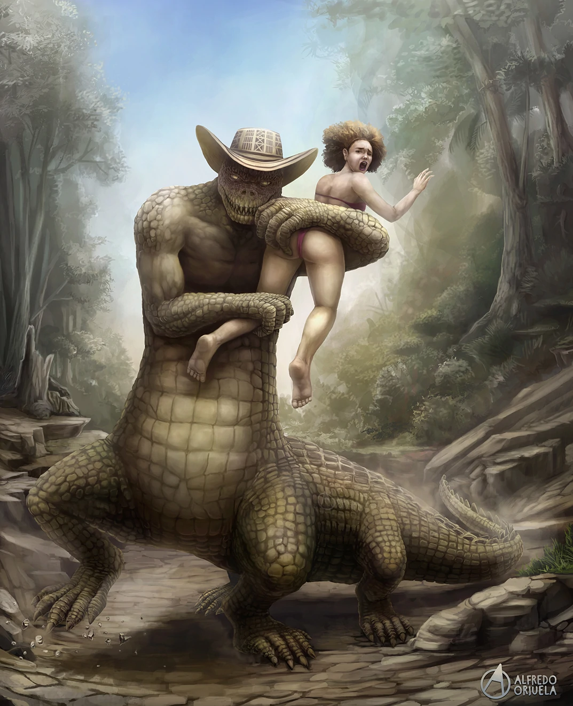
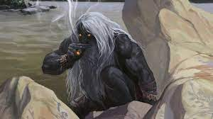

El jinete negro

¿Cómo es la leyenda del jinete negro?
Dice la leyenda que en las calles de Ocaña las gentes podían ver el fantasma del jinete negro...
La Patasola

La Patasola, en el folclor narrativo de Colombia, es una mujer monstruosa que se caracteriza porque..
El hombre caimán

En torno a las aguas del río Magdalena, a su paso por Plato, se originó esta leyenda alrededor de la figura de..
El Mohán

En el folclore tolimense, destaca un ser mitológico conocido como Mohan. Un personaje descrito